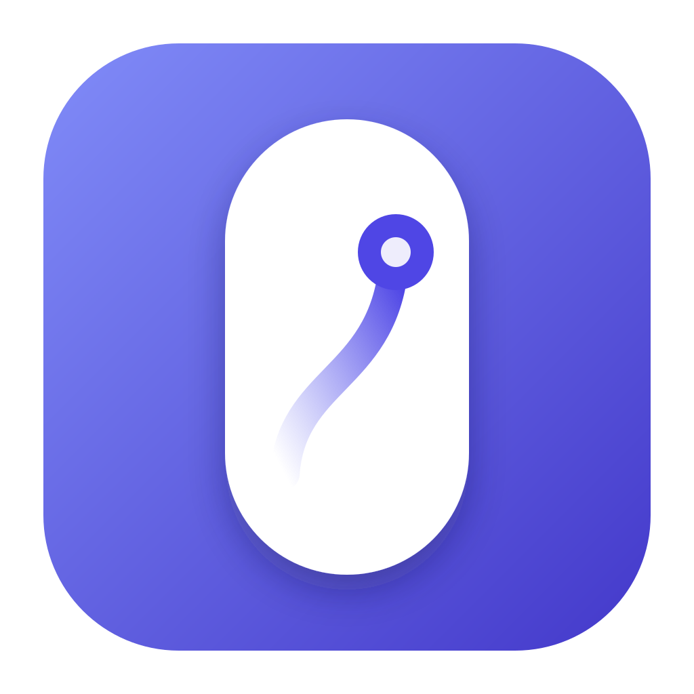
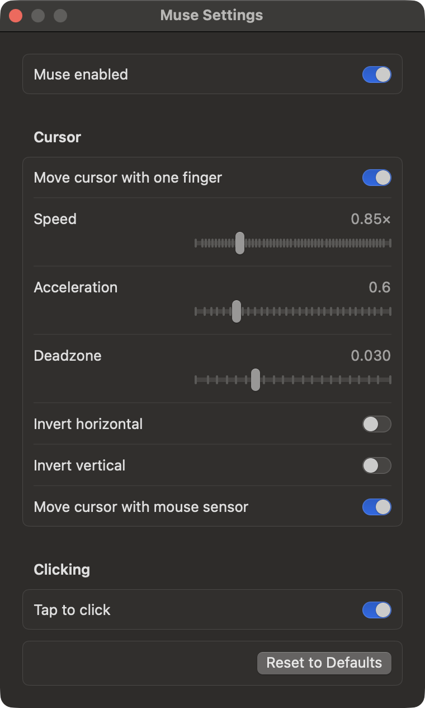

One finger moves the cursor
Slide a finger across the surface and the cursor follows, like on a trackpad. Small moves no longer mean moving the whole mouse.

MuseMuse lives in the menu bar and turns the Magic Mouse's touch surface into a small trackpad. Slide one finger to move the cursor, use two fingers to scroll, and tap to click.
Gestures
Normally, macOS only uses the Magic Mouse surface for scrolling, so brushing it with one finger while you click scrolls the page. Muse gives each finger count its own job.
Slide a finger across the surface and the cursor follows, like on a trackpad. Small moves no longer mean moving the whole mouse.
Scrolling and momentum work as usual with two fingers. One-finger scrolling is turned off, so stray touches stop moving the page.
Optional: a quick, light tap is a left click, and two quick taps are a double click. You can still press the mouse to click as usual.
In the menu bar
Muse has no main window. A menu bar icon shows whether your Magic Mouse is connected, and a Settings window lets you tune how it feels. Changes apply while you drag the sliders, so you can try the mouse as you tune.
Trackpads and regular scroll-wheel mice behave exactly as before. Muse only changes what the Magic Mouse surface does.

Details
Every option is in the Settings window. They are also plain defaults keys, if you prefer the terminal.
Set how far the cursor moves per swipe, and how much extra speed a fast swipe adds.
A finger has to slide a little before the cursor moves, so clicking doesn't nudge it.
Flip horizontal or vertical cursor movement on its own.
Turn off Move cursor with mouse sensor and only the touch surface and the trackpad move the cursor.
Untick Enabled and the mouse behaves like normal until you turn Muse back on.
Muse starts quietly when you log in. You can turn that off, or hide the menu bar icon entirely.
Install
Muse is built from source on your Mac. You need macOS 13 or later and the Xcode Command Line Tools.
xcode-select --install if you don't have them yet.make install. Muse is copied to ~/Applications and set to start at login.$ git clone https://github.com/SinghChinmayy/Muse.git
$ cd Muse
$ make install
# then allow Muse in Privacy & Security → AccessibilityEach build gets a new ad-hoc signature, so after reinstalling you may need to switch Muse off and on again in Accessibility. To remove it, run make uninstall.
Under the hood
Muse reads raw touches from the Magic Mouse and decides, event by event, which scrolls and cursor moves to let through. Every one of those rules lives in a small Swift library that is fully covered by unit tests.
Good to know: macOS has no public API for Magic Mouse touches, so Muse uses Apple's private MultitouchSupport framework. A future macOS update could break it.
FAQ
To stop one-finger scrolls and to move the cursor, Muse watches scroll and pointer events before apps receive them. macOS only allows that for apps you have approved under Accessibility.
Yes. Trackpads and normal scroll-wheel mice aren't affected. The one exception: with Move cursor with mouse sensor turned off, a plain USB or Bluetooth mouse can't move the cursor either, because macOS doesn't say which device a movement came from.
The original Magic Mouse, Magic Mouse 2 and the USB-C Magic Mouse. The menu shows whether one is connected.
Yes. Apps that add swipes can run alongside Muse. If you use Muse's tap to click, turn off tap to click in the other app, or a tap will click twice.
Muse is built and signed on your own Mac with make install. There is no notarised download yet.
Run make uninstall in the repository folder. It removes the app, the login item and the Accessibility entry.